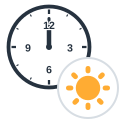
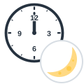
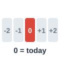
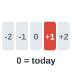
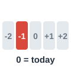
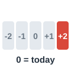
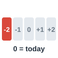

dawn
الفجر
We left the house at dawn.
غادرنا البيت عند الفجر.
Parts of the Day
مرّر الماوس على السماعة أو اضغط عليها لتسمع النطق. السماعة الكبيرة نطق أمريكي (وهو المكتوب بالرموز)، وزر UK نطق بريطاني.
الفجر
We left the house at dawn.
غادرنا البيت عند الفجر.
شروق الشمس
We watched the sunrise from the beach.
شاهدنا الشروق من الشاطئ.
الصباح
I drink coffee every morning.
أشرب القهوة كل صباح.

الظهر (12 ظهرًا)
The shop closes at noon on Fridays.
يغلق المتجر عند الظهر أيام الجمعة.
منتصف النهار
The sun is hottest at midday.
تكون الشمس في أشد حرارتها منتصف النهار.
بعد الظهر
Let's meet this afternoon.
لنلتقِ بعد ظهر اليوم.
غروب الشمس
The sky turned orange at sunset.
تحولت السماء إلى البرتقالي عند الغروب.
المساء
We usually have dinner in the evening.
نتناول العشاء عادة في المساء.
الغسق
The street lights come on at dusk.
تُضاء أنوار الشارع عند الغسق.
الشفق
We walked home in the twilight.
عدنا إلى البيت مشيًا في ضوء الشفق.
الليل
I can't sleep at night when it's hot.
لا أستطيع النوم ليلًا حين يكون الجو حارًا.

منتصف الليل
The party ended at midnight.
انتهت الحفلة عند منتصف الليل.
النهار
It's noisy here in the daytime.
المكان صاخب هنا أثناء النهار.
فترة الليل
The roads are quieter at nighttime.
الطرق أهدأ في الليل.

اليوم
What are you doing today?
ماذا ستفعل اليوم؟
الليلة
Are you free tonight?
هل أنت متفرغ الليلة؟

غدًا
I have an exam tomorrow.
لدي امتحان غدًا.

أمس
I saw him yesterday.
رأيته أمس.

بعد غد
We travel the day after tomorrow.
نسافر بعد غد.

أول أمس
It rained the day before yesterday.
أمطرت أول أمس.
ستسمع كلمة من كلمات الصفحة، فاضغط على الصورة التي تعبر عنها.
الكلمات المميزة هي كلمات هذه الصفحة. اضغط على أي كلمة ليبدأ الصوت منها ويكمل ما بعدها.
What are your plans for today? Are you still going to the desert?
ما خططك لليوم؟ هل ما زلت ذاهبًا إلى الصحراء؟
Yes, but not today. We leave tomorrow, before dawn.
نعم، لكن ليس اليوم. نغادر غدًا قبل الفجر.
So early? Why?
بهذا التبكير؟ لماذا؟
We want to watch the sunrise from the top of the hill. The morning there is beautiful and cool.
نريد مشاهدة الشروق من أعلى التل. الصباح هناك جميل ومنعش.
It must get very hot by noon.
لا بد أن الجو يصبح حارًا جدًا عند الظهر.
Terribly. At midday we'll rest in the tent, and the daytime heat won't drop until late afternoon.
جدًا. سنستريح في الخيمة منتصف النهار، ولن تنخفض حرارة النهار إلا في أواخر فترة ما بعد الظهر.
And then what?
وماذا بعد ذلك؟
We'll climb again for the sunset. At dusk the guide will light a fire, and we'll sit in the twilight and tell stories.
سنصعد مجددًا لمشاهدة الغروب. وعند الغسق سيشعل المرشد نارًا، وسنجلس في ضوء الشفق ونتبادل القصص.
That sounds like a perfect evening. Will you sleep outside?
يبدو هذا مساءً مثاليًا. هل ستنامون في العراء؟
Yes. At night you can see every star. We usually stay up until midnight.
نعم. في الليل يمكنك رؤية كل نجمة. نسهر عادة حتى منتصف الليل.
Isn't it cold in the nighttime?
أليس الجو باردًا في الليل؟
Very cold! I bought a warm jacket yesterday, and my brother bought his the day before yesterday.
بارد جدًا! اشتريت معطفًا دافئًا أمس، واشترى أخي معطفه أول أمس.
When will you be back?
متى ستعود؟
The day after tomorrow. Can we meet tonight, before I pack?
بعد غد. هل يمكننا اللقاء الليلة قبل أن أحزم أمتعتي؟
الكلمات المميزة هي كلمات هذه الصفحة. اضغط على أي كلمة ليبدأ الصوت منها ويكمل ما بعدها.
Life in our village follows the sun. My grandfather wakes up at dawn, when the sky is still dark and pink, and he walks to the fields before sunrise. By the time the morning sun is warm, he has already finished half of his work. At noon he comes home for lunch, because nobody can work in the fields at midday in the summer. In the afternoon he takes a short nap, and then he returns to work until sunset. The evening is my favorite part of the day, because the whole family sits together and drinks tea. At dusk the children run home, and in the twilight the first stars appear. During the daytime the village is full of noise, but at night it becomes completely quiet. In the nighttime you can hear only the dogs and the wind. Nobody stays awake until midnight, except my cousin, who loves his phone. Yesterday my grandfather told me that today is the last day of the harvest. Tomorrow he will rest, and tonight we will celebrate. The day before yesterday he looked tired, but he smiled and said that the day after tomorrow he will start planning for next year.
تسير الحياة في قريتنا مع الشمس. يستيقظ جدي عند الفجر، حين تكون السماء ما زالت داكنة وورديّة، ويمشي إلى الحقول قبل الشروق. وحين تصبح شمس الصباح دافئة يكون قد أنهى نصف عمله. وعند الظهر يعود إلى البيت لتناول الغداء، لأن أحدًا لا يستطيع العمل في الحقول منتصف النهار في الصيف. وبعد الظهر يأخذ قيلولة قصيرة، ثم يعود إلى العمل حتى الغروب. والمساء هو الجزء المفضل لدي من اليوم، لأن العائلة كلها تجلس معًا وتشرب الشاي. وعند الغسق يركض الأطفال إلى بيوتهم، وفي ضوء الشفق تظهر النجوم الأولى. وأثناء النهار تمتلئ القرية بالضجيج، لكنها تصبح هادئة تمامًا في الليل. وفي فترة الليل لا تسمع سوى الكلاب والريح. ولا يبقى أحد مستيقظًا حتى منتصف الليل، إلا ابن عمي الذي يحب هاتفه. وقد أخبرني جدي أمس أن اليوم هو آخر أيام الحصاد. وغدًا سيستريح، والليلة سنحتفل. وبدا متعبًا أول أمس، لكنه ابتسم وقال إنه بعد غد سيبدأ التخطيط للعام القادم.